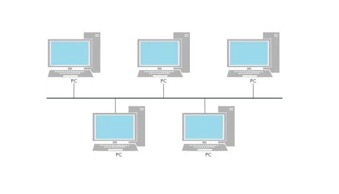
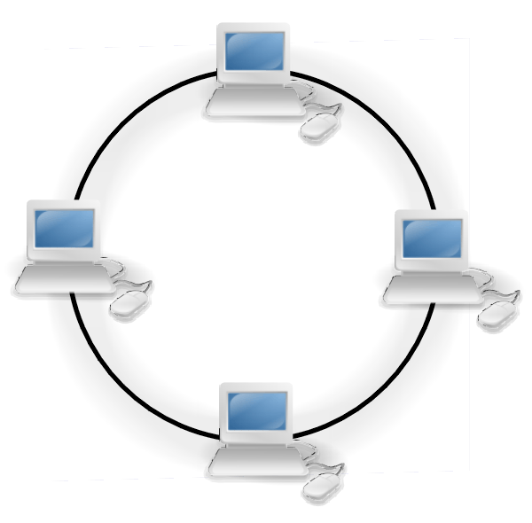
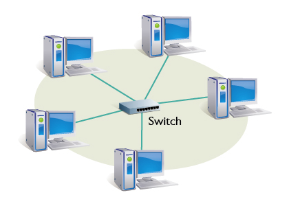
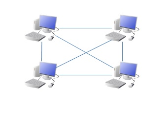
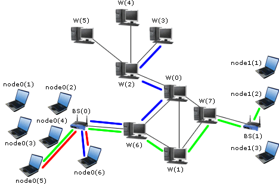
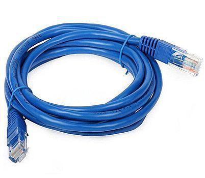
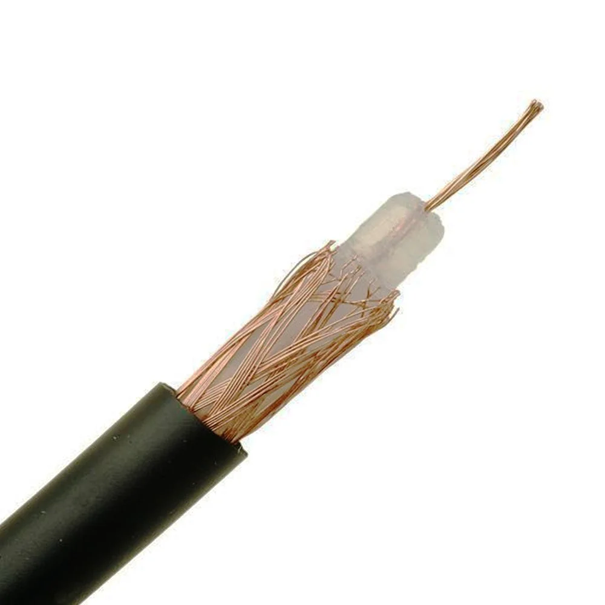
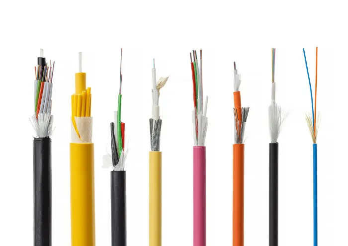

Aula 03 — Topologias de Rede e Meios de Transmissão
Disciplina: 49304 — Redes de Computadores I · Sistemas de Informação — Uniube
Professor: Romualdo Mathias Filho
Semana: 3 · Semana de 10/08/2026 · [CONFIRMAR sala] · 📘 Teórica (75 min)
Página de referência: Plano de Ensino e Contrato
Responda antes de abrir. Se errar, você acabou de descobrir o que revisar hoje.
Na Aula 02, por que a VPN aparece na mesma tabela que LAN, MAN e WAN sem ser um tamanho de rede?
Porque alcance e privacidade são eixos diferentes. LAN, MAN e WAN classificam por área geográfica; a VPN é um túnel lógico criptografado que roda em cima de outra rede — normalmente a WAN. Ela entra na lista por ser um tipo de rede que você vai encontrar, não por ocupar uma faixa de tamanho.
O ping para um servidor não respondeu. Isso prova que ele está fora do ar?
Não. Muitos servidores e firewalls corporativos bloqueiam ICMP por política. O ping que responde prova que o host está vivo; o silêncio dele não prova o contrário.
1. Topologia física e topologia lógica [Teoria ⏳ 5 min]
A topologia de rede define a estrutura de organização física e lógica de uma rede:
- Topologia física: o leiaute real — a disposição dos computadores, a passagem dos cabos metálicos e ópticos, a interconexão das portas dos ativos de rede.
- Topologia lógica: como os dados trafegam pelo meio compartilhado, ou seja, as regras de controle de acesso ao meio impostas pelos protocolos.
A escolha da topologia decide desempenho, custo, facilidade de expansão e tolerância a falhas — os quatro eixos que todo projeto de rede negocia entre si.
Antes de rolar: uma rede cabeada em estrela pode ter topologia lógica de barramento?
Pode — e teve, por muito tempo. Uma rede ligada fisicamente em estrela num hub se comportava logicamente como barramento: o hub repetia o sinal em todas as portas, todo mundo ouvia todo mundo e as colisões aconteciam como num cabo único. O desenho dos cabos mudou; a regra de acesso ao meio, não. Foi o switch que separou de fato as duas coisas — e é exatamente o assunto da próxima aula.
2. As cinco topologias [Teoria ⏳ 20 min]
2.1 — Barramento (Bus)
Todos os dispositivos compartilham o mesmo meio de transmissão. Apenas um transmite por vez, e todos “ouvem” o que é enviado. Se o cabo principal romper em qualquer ponto, o barramento perde a terminação resistiva e toda a rede entra em colapso. Comum em redes legadas com cabo coaxial (10Base2).

2.2 — Anel (Ring)
Os dispositivos formam um circuito fechado e unidirecional, cada host ligado a dois vizinhos. Os dados circulam de nó em nó até alcançar o destino.
O exemplo clássico é o Token Ring (IEEE 802.5), que usava uma ficha digital (token) para controlar quem podia transmitir, reduzindo colisões. A quebra de um único cabo rompe o anel e inutiliza a rede — a menos que seja um anel duplo redundante.

2.3 — Estrela (Star)
Cada host conecta-se a um concentrador central (switch ou hub) por um link individual ponto a ponto. É a topologia física predominante nas redes Ethernet modernas. Se um cabo individual falha, apenas aquele host é afetado; se o equipamento central falha, a rede local inteira para.

2.4 — Malha (Mesh)
Cada dispositivo se conecta a vários outros, criando caminhos redundantes. Isso aumenta muito a tolerância a falhas: se um enlace cai, os pacotes seguem por caminho alternativo. Usada em infraestrutura crítica — WANs de operadoras, data centers e redes Wi-Fi mesh.

2.5 — Híbrida
Combina duas ou mais topologias na mesma infraestrutura. Comum em redes corporativas de médio e grande porte: setores organizados em estrela, interligados entre si por uma estrutura de malha ou árvore.

💼 Pergunta de entrevista
“Se a malha é a mais tolerante a falhas, por que praticamente nenhuma LAN corporativa é em malha?” — Porque o custo de cabeamento cresce com o quadrado do número de nós: cem hosts em malha completa exigiriam 4.950 enlaces. A estrela troca tolerância por viabilidade, e a redundância volta depois só onde dói — entre switches, não entre estações.
3. Meios guiados (com fio) [Teoria ⏳ 20 min]
Meios guiados conduzem as ondas eletromagnéticas ou ópticas por um caminho físico delimitado.
3.1 — Par trançado
Pares de fios de cobre isolados e trançados helicoidalmente. O trançamento cancela o ruído eletromagnético externo e a diafonia entre pares vizinhos. É o meio mais comum nas redes Ethernet atuais.
- UTP (Unshielded Twisted Pair): sem blindagem. Flexível e econômico, padrão de escritório.
- STP (Shielded Twisted Pair): com blindagem metálica, para interferência industrial severa.
- Categorias: CAT5e (até 1 Gbps a 100 m), CAT6 (até 10 Gbps a 55 m), CAT7/CAT8 para data centers.

3.2 — Cabo coaxial
Condutor de cobre central, camada isolante dielétrica, blindagem em malha metálica (retorno de terra e escudo contra ruído) e capa externa. Boa resistência a interferência eletromagnética. Muito usado em redes locais antigas em barramento; hoje predomina em TV a cabo e acesso residencial à Internet (HFC).

3.3 — Fibra óptica
Transmite dados como pulsos de luz, não como sinal elétrico. Núcleo de vidro de alta pureza cercado por uma casca de índice de refração diferente, o que provoca reflexão interna total.
- Imunidade eletromagnética total: não conduz eletricidade, logo não sofre interferência de motores, cabos elétricos ou descargas atmosféricas.
- Alcance: dezenas de quilômetros sem regeneradores de sinal.
- Monomodo (SMF): núcleo estreito (~9 µm), caminho único de luz coerente (laser). Longas distâncias, WAN e operadoras.
- Multimodo (MMF): núcleo largo (~50 a 62,5 µm), múltiplos caminhos de propagação (LED). Enlaces curtos dentro de edifícios.

⚠️ Gotcha
O limite de 100 metros por segmento do par trançado não é sugestão de fabricante: é o que o padrão Ethernet garante para o sinal chegar íntegro. Passar de 100 m “porque funcionou no teste” produz a pior classe de defeito de rede — o que só aparece sob carga, meses depois, e ninguém associa ao cabo.
4. Meios não guiados (sem fio) [Teoria ⏳ 10 min]
Transmitem pelo espaço livre, por ondas de rádio propagadas por antenas.
- Wi-Fi (IEEE 802.11): redes locais sem fio. Oferece mobilidade e instalação fácil, mas é sensível a interferência, a obstáculos físicos e à competição com outras redes na mesma faixa.
- Bluetooth: curta distância e baixo consumo. Fones, teclados, mouses e sensores IoT. Não substitui Wi-Fi nem cabo em alcance ou velocidade.
- Micro-ondas e satélite: enlaces de longa distância onde não há infraestrutura cabeada. Maior latência, custo mais alto e, no caso do satélite, dependência de condições climáticas.
4.1 — Comparativo dos meios
| Meio | Vantagens | Desvantagens |
|---|---|---|
| Par trançado | custo acessível, instalação fácil, boa velocidade em LAN | suscetível a interferência eletromagnética, alcance limitado |
| Coaxial | boa resistência a interferência; TV a cabo e Internet residencial | mais rígido que o par trançado, taxa de transmissão inferior |
| Fibra óptica | altíssima velocidade, baixa latência, imune a interferência | alto custo, exige infraestrutura e mão de obra especializadas |
| Wi-Fi | mobilidade, instalação fácil, presente em todo dispositivo | menor velocidade que o cabo, vulnerável a interferência |
| Bluetooth | baixo consumo, ideal para curtas distâncias | alcance muito limitado, velocidade inferior |
| Satélite | cobertura global, útil em áreas remotas | alta latência, custo elevado, sensível ao clima |
Três cenários no projetor — um galpão industrial com cabos de alta tensão na canaleta, um prédio de apartamentos e um campus com dois blocos a 800 m. Para cada um, votar no meio de transmissão adequado e justificar em uma frase.
Plano B: se a rede cair, os mesmos três cenários vão no quadro e a votação é por levantada de dedos, cenário a cenário. Mesmo conteúdo, mesmo tempo.
5. Prática: medir o meio [Hands-On ⏳ 10 min]
- Faça um teste de velocidade conectado ao Wi-Fi. Anote a taxa e a latência.
- Repita o mesmo teste conectado por cabo Ethernet, se houver ponto disponível. Anote os dois números de novo.
- Execute
tracert google.come observe o caminho dos pacotes: quantos saltos até sair da rede da Uniube. - Compare os resultados e escreva uma frase: qual diferença veio do meio e qual veio da distância.
Critério de pronto: você tem os dois pares de números anotados e consegue apontar, no tracert, em que salto o pacote deixou a rede local.
💡 Dica de produção
A latência que o teste de velocidade mostra é quase toda distância, não meio. Trocar Wi-Fi por cabo melhora muito a estabilidade e a taxa, mas quase nada o RTT até um servidor em outro estado — a luz na fibra já está perto do limite físico. Saber separar as duas coisas evita meia dúzia de diagnósticos errados por semestre.
| Conceito | Definição em uma frase |
|---|---|
| Topologia física | onde os cabos e equipamentos realmente estão |
| Topologia lógica | como os dados de fato trafegam pelo meio |
| Barramento | meio único compartilhado; o rompimento derruba tudo |
| Anel | circuito fechado unidirecional; a quebra de um cabo rompe o anel |
| Estrela | cada host num link próprio ao switch central — padrão das LANs modernas |
| Malha | caminhos redundantes, tolerância máxima, custo que cresce ao quadrado |
| Par trançado | cobre trançado contra diafonia; limite de 100 m por segmento |
| Coaxial | condutor central blindado; TV a cabo e banda larga residencial |
| Fibra óptica | luz em vidro; imune a interferência, chega a dezenas de km |
| Monomodo × Multimodo | núcleo estreito e laser para longa distância × núcleo largo e LED para enlace curto |
| SPOF | o elemento cuja queda derruba tudo que depende dele |
| Diafonia | interferência entre cabos paralelos vizinhos |
A topologia em estrela concentra todo o risco num único switch, e mesmo assim venceu a malha, que não tem esse problema. Que outros lugares da computação você conhece em que a solução tecnicamente superior perdeu para a viável? O que isso diz sobre o que "melhor" significa dentro de um projeto de rede?
- KUROSE, J. F.; ROSS, K. W. Redes de computadores e a Internet: uma abordagem top-down. 8. ed. São Paulo: Pearson, 2021. cap. 1, p. 15–35 — meios físicos de transmissão.
- TANENBAUM, A. S.; FEAMSTER, N.; WETHERALL, D. J. Redes de Computadores. 6. ed. São Paulo: Pearson, 2021. cap. 2, p. 60–110 — meios guiados, não guiados e topologias.
- LACERDA, P. S. P.; SOARES, J. A.; LENZ, M. L. et al. Projeto de Redes de Computadores. Porto Alegre: Sagah, 2021. cap. 2, p. 30–65 — topologias de rede e cabos.
Hoje você decidiu por onde o sinal viaja. Na próxima, a pergunta é o que acontece quando dois hosts falam ao mesmo tempo no mesmo meio — e como o switch aprende, sozinho e sem ninguém configurar, quem está em cada porta.